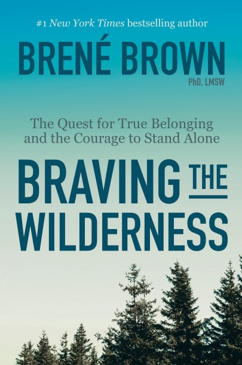

Author : Bren Brown
Genre : Self-help
Best price : €11.99*
Buy at: Book Depository

Braving the Wilderness
#1 NEW YORK TIMES BESTSELLER • A timely and important new book that challenges everything we think we know about cultivating true belonging in our communities, organizations, and culture, from the #1 bestselling author of Rising Strong, Daring Greatly, and The Gifts of Imperfection
“True belonging doesn’t require us to change who we are. It requires us to be who we are.” Social scientist Brené Brown, PhD, LMSW, has sparked a global conversation about the experiences that bring meaning to our lives—experiences of courage, vulnerability, love, belonging, shame, and empathy. In Braving the Wilderness, Brown redefines what it means to truly belong in an age of increased polarization. With her trademark mix of research, storytelling, and honesty, Brown will again change the cultural conversation while mapping a clear path to true belonging.
Brown argues that we’re experiencing a spiritual crisis of disconnection, and introduces four practices of true belonging that challenge everything we believe about ourselves and each other. She writes, “True belonging requires us to believe in and belong to ourselves so fully that we can find sacredness both in being a part of something and in standing alone when necessary. But in a culture that’s rife with perfectionism and pleasing, and with the erosion of civility, it’s easy to stay quiet, hide in our ideological bunkers, or fit in rather than show up as our true selves and brave the wilderness of uncertainty and criticism. But true belonging is not something we negotiate or accomplish with others; it’s a daily practice that demands integrity and authenticity. It’s a personal commitment that we carry in our hearts.” Brown offers us the clarity and courage we need to find our way back to ourselves and to each other. And that path cuts right through the wilderness.
Specifications:
Publisher: Bloomsbury Publishing PLC
ISBN: 9781408855652
Number of pages: 352
Weight: 280 g
Dimensions: 128 x 196 x 26mm
>>Reviews
I gave this book five stars because as usual Brown has done her research, and she is a masterful storyteller. These are the two passions of my life: research and storytelling.
I'm a Licensed Professional Counselor and an author, so I devour Brown's books. My favorite is The Power of Vulnerability. I have watched her TED talks probably a hundred times. I tell every one of my clients to read her books and watch her videos. I'm a huge fan.
However, this book wasn't fun or pleasurable the way her other books have been. I listened on Audible and felt pained much of the time. Part of that is because I identify with the ways I've armored up after the 2016 election. I lean conservative and have tried to share my views with civility and have always encouraged people to respectfully share theirs. Yet I've been called every name you could imagine. Sadly the worst offenses came from my Christian brothers and sisters who see things differently. One of the cruelest people was an author who wrote a book (that I purchased) about how we need to listen to peoples' stories so we can understand their points of view. Oh the irony. I finally reached a place where I lumped all of them into a group of haters. I stopped listening and stopped caring what the opposing side had to say.
With that as my history, I found Brown's research about dehumanization helpful. I needed her information about what helps people who are in heated debates.
When I'm in the counseling setting this is easy for me to do. I love to hear all sorts of views, even ones I disagree with. I want to know how and why people see the world the way they do. But, experiencing our country so divided, I admit I had armored up and sided up.